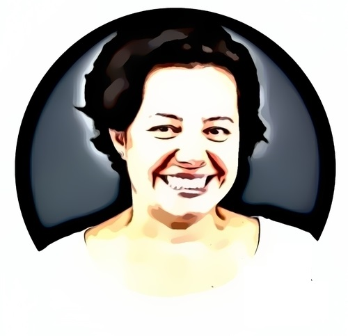

Sobre Nós
Educação, Diversidade, Saúde, Longevidade e Sustentabilidade
Uma Edtech brasileira, a Soul Code Academy, é uma escola de educação não formal e inclusão digital, de metodologia ágil, com a missão de gerar impacto social, através da capacitação tecnológica, com foco em diversidade, equalidade e empregabilidade.
Equipe
Erika PortoMarketing Digital | Desenvolvimento Full-StackGosta muito de aprender, considera um prazer vencer novos desafios, descobrir novos conhecimentos. |

Fernanda MouraProject Manager | Desenvolvimento Full-StackProject Manager com sólida formação acadêmica e experiência em empresas com foco em consultoria. |
Geisiane FerreiraDesenvolvimento Full-Stack (Ênfase Front-End)Sua formação vem da Universidade Estácio de Sá. Têm aprimorado seus estudos em Desenvolvimento Web fortalecendo seus estudos em HTML, CSS e JavaScript. |
Marília Nunes CortesGerente de Suporte | Desenvolvimento Full-StackFormada em Lazer e Turismo pela Universidade de São Paulo e em Teatro Musical pelo SESI/SP, estuda Programação na SoulCode Academy. |
Pollyana SousaAtendimento em Tecnologia | Desenvolvimento Full-Stack
Iniciou no mercado de trabalho como Auxiliar de Administração, e trabalhou por alguns anos com atendimento Telemarketing. |
Tulani ConceiçãoDesenvolvimento Full-Stack (Ênfase Back-End)Formada em Farmácia pela Universidade Federal de Santa Catarina, começou a investir nos estudos em Tecnologia em Janeiro de 2021. |